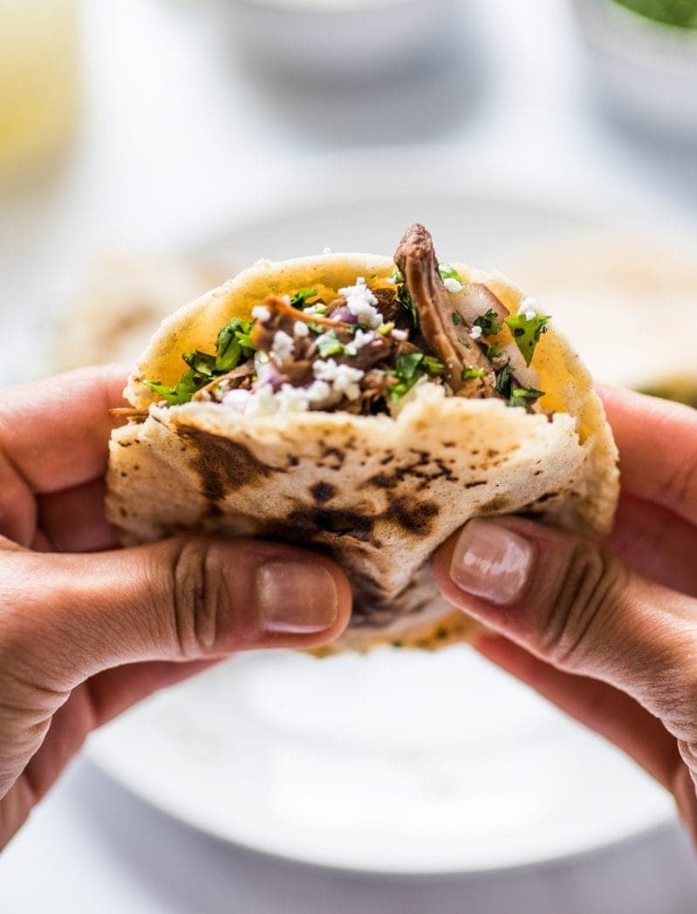

Gorditas

These little corn cakes made from masa
dough have a little pocket in the middle for all sorts of delicious fillings! They’re also gluten free, vegetarian and vegan.
What are Gorditas?
Essentially, gorditas are thick corn tortillas that have a pocket in
the middle made for stuffing with delicious Mexican fillings. Preferably on the spicy side if you ask me. Some common fillings include:
- refried beans and cheese
- chile verde(tender pork in a green chile sauce)
- chorizo and eggs
- picadillo
- papas con chile(tender diced potatoes stewed in a green chile sauce)
How to make Gorditas?
- Mix together masa harina, water and salt to create a dough. Roll the dough into 16 little balls. At this point, heat a large skillet, griddle or comal
over medium-high heat.
- Lightly flatten a masa ball in between two sheets of plastic wrap using a tortilla press (this is the one I have) or a flat plan. Make sure not to press it
down too much as it will become too thin like a normal corn tortilla. You want it about twice as thick as a normal tortilla. If you mess up and make it
too thin, simply gather the flattened dough, reform it into a ball and try again.
- Remove the flattened masa from the plastic wrap and place it on the hot griddle. Let it cook for about 10 to 15 seconds,
flip it over and let that side cook for another 10 to 15 seconds. This helps to sort of seal the dough so that an air pocket can form more easily.
Flip it over one more time and cook each side for about 1 minute, until they have beautiful brown spots.
-
At this point, you should notice that the gordita inflates a little bit and starts to bubble up in the middle or the sides.
This is exactly what you want. Lightly press down on the sides of the gordita with a spatula or other utensil to help it inflate even more.
Remove it from the griddle, place it on a plate and cover it with a light kitchen towel.
-
As soon as you can handle and hold the gordita (it should still be hot but not hot enough to burn you), use a butter or paring knife to cut a slit down the edge of one side.
The gordita should open up and have cute little pocket to stuff all the wonderful fillings.